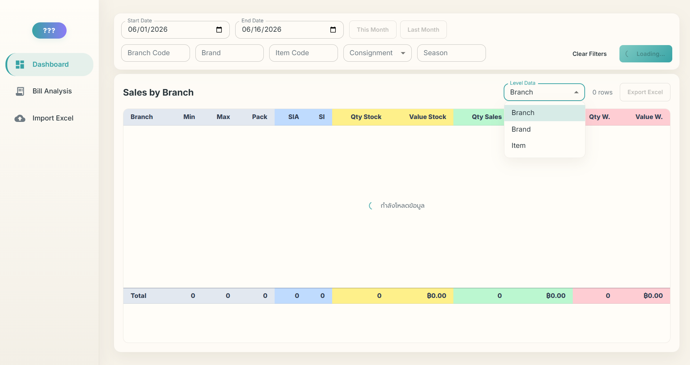
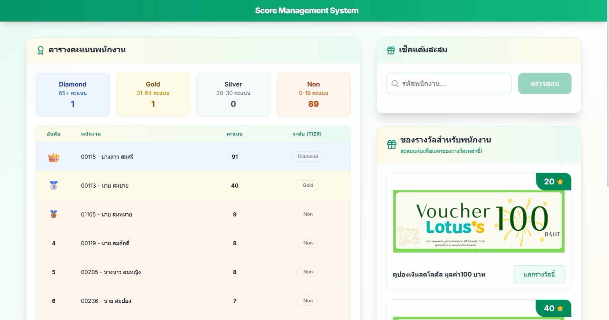
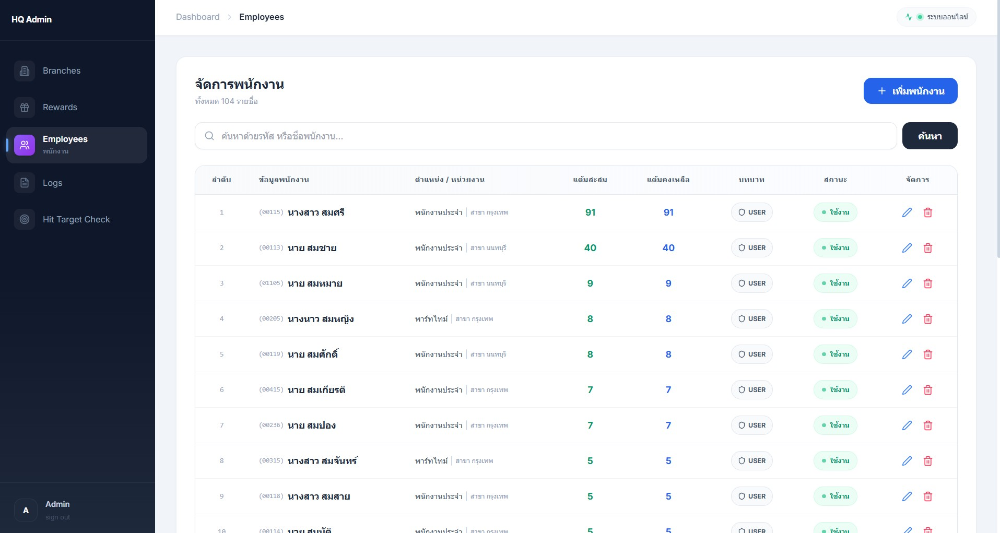

Natthawut Tangkulanuphan
(Jimmy)
Demand Planner & Supply Chain Automation Developer
ยกระดับประสิทธิภาพด้าน Supply Chain ด้วยระบบเทคโนโลยีที่ออกแบบเฉพาะ (Customized Systems) และระบบ Automation เพื่อสนับสนุนการตัดสินใจบนพื้นฐานข้อมูล (Data-Driven Decision Making)
Contact Me
About Me
จบการศึกษาด้าน Computer Science และมีความสนใจในด้าน Supply Chain Management (SCM) ผมเป็นผู้ที่มีความกระตือรือร้น (Self-driven) และสามารถเชื่อมโยงระหว่าง Data Logic กับการดำเนินงานด้าน Supply Chain ได้อย่างมีประสิทธิภาพ โดยผสานความถนัดด้านตัวเลขเข้ากับทักษะ Development Programming และ Automation เพื่อพัฒนาโซลูชันที่ช่วยเปลี่ยนงาน Manual ให้เป็นกระบวนการที่มีประสิทธิภาพและมีความแม่นยำสูง (High-Accuracy Workflows) เป็นผู้เรียนรู้เร็ว (Fast Learner) และมุ่งมั่นเติบโตในสายงาน SCM ในระยะยาว พร้อมตั้งเป้าใช้ Advanced Analytics และเทคโนโลยี
Technical Skills
Core Tech
Node.js, React + Vite, Prisma ORM, PostgreSQL, Python, SQLSupply Chain & Data
Demand Planning, Auto-ordering systems, Managing product lists (SKUs), Advanced Excel, Data Visualization, Inventory OptimizationModern Workflow
Fast Learning, Prompt engineering for technical solutionsTools & DevOps
Cloud hosting, Code Development, Excel VBA, Microsoft Office, Git, Automation ScriptsExperience

Demand Planning
July 2026 - PresentSupply Chain Analyst Officer
Sept 2025 - June 2026 · 10 MonthBright Mind Retail Co., Ltd.
- Demand Planning & Inventory Optimization: วิเคราะห์ข้อมูลยอดขายเชิงลึกระดับ Branch, Brand และ SKU เพื่อพยากรณ์แนวโน้มความต้องการสินค้า (Demand Forecasting) พร้อมบริหารจัดการปัญหา Out-of-Stock และ Overstock เพื่อรักษาปริมาณสินค้าคงคลังให้อยู่ในระดับที่เหมาะสมที่สุด
- AutoPO & Centralized Data Systems: ออกแบบและพัฒนาระบบอัตโนมัติในการรวบรวมข้อมูลจากหลากหลายแหล่งเข้าสู่ Centralized Database เพื่อวิเคราะห์แนวโน้มยอดขายและข้อมูลการเบิกสินค้า ช่วยสนับสนุนการคำนวณและออกใบสั่งซื้อ (Purchase Orders: PO) ได้อย่างแม่นยำ
- Full-Stack Planogram System (Web & Mobile): พัฒนาระบบจัดการ Layout สินค้าบนชั้นวาง (Shelf) ทั่วทุกสาขา พร้อม Admin Dashboard สำหรับวิเคราะห์ยอดขายและสถานะสต็อกแบบ Real-time ช่วยให้พนักงานหน้าร้านเช็คตำแหน่งสินค้าได้อย่างถูกต้องและลดความผิดพลาดในการจัดวาง
- Workplace Automation & Operations Tech: ประยุกต์ใช้ทักษะการเขียนโปรแกรม เพื่อพัฒนา Automation Scripts สำหรับปรับปรุงกระบวนการทำงานที่ซ้ำซ้อน (Repetitive Processes) เช่น การพัฒนาระบบสร้างรหัสบัตรกำนัล (Voucher Codes) มากกว่า 50,000 รายการ เพื่อรองรับแคมเปญการตลาด ช่วยลด Human Error และเพิ่มประสิทธิภาพการดำเนินงาน (Operational Efficiency) ขององค์กร


Projects
🤖 Automation Script & Centralized Report System (2026)
- Project Overview: พัฒนาระบบ Automation Script สำหรับรวบรวมข้อมูลจากหลายแหล่งให้อยู่ในศูนย์กลางเดียว เพื่อลดงานซ้ำและช่วยให้ข้อมูลพร้อมใช้งานสำหรับการวิเคราะห์
- Data Consolidation: ออกแบบขั้นตอนการรวมข้อมูล ตรวจสอบความถูกต้อง และจัดรูปแบบข้อมูลให้เหมาะสมก่อนนำไปใช้งานต่อ
- Automated Reporting: ดึงข้อมูลจากแหล่งกลางออกมาเป็น Report เพื่อสนับสนุนการติดตามผลและการตัดสินใจ

🎁 CRM Employee Reward System (2026)
- Project Overview: พัฒนาระบบ CRM สำหรับรีวอร์ดพนักงาน โดยผู้ใช้งานสามารถสะสมแต้มจากการทำกิจกรรมที่กำหนดไว้
- Reward Redemption: เมื่อแต้มครบตามเงื่อนไข พนักงานสามารถนำแต้มไปแลกรางวัลได้ตามสิทธิ์และประเภทรีวอร์ดที่กำหนด
- Admin & Audit Log: มีระบบหลังบ้านสำหรับแอดมินในการตรวจสอบข้อมูล หลักฐาน รายการแลกของรางวัล และ Log การทำรายการเพื่อความโปร่งใส


🌐 NoraStory: Dynamic Storytelling Platform (2026) - (Software Development Portfolio)
- Project Overview: Automated semi-template web page creation system for E-commerce businesses seeking to impress customers through storytelling. Supports over 800 million unique URL patterns and complete Firebase-integrated backend management system.
- Dynamic Link System: Developed a "Dynamic Link" system that generates unique URLs for customers to access personalized web pages.
- Serverless Backend: Built a Serverless Architecture using Firebase Cloud Functions to handle orders, payments, and automated workflows.
- Admin Dashboard: Implemented Role-based access to manage orders, verify payment slips, and assign templates securely.
- Custom Domain: Created a Custom Domain System for customers (e.g., norastory.com/{customer}) using path-based routing with dynamic content generation.
- Database Management: Designed a Secure Database in Firestore with strict rules to protect customer data and media files. Managed Multiple Templates that allow admins to change the website's look instantly without redeploying code.
Link: 🔗 https://norastory.com


🛍️ E-Commerce Web Application (2025) - DEMO (Software Development Portfolio)
- Project Overview: Developed a full-stack E-commerce system supporting end-to-end operations, including customer purchasing (shopping, cart) and admin management for products, orders, and inventory-related processes
- Security & Authentication: Implemented secure Token-based Authentication with role separation (Admin/User) to protect user data and ensure controlled system access
- Architecture & Code Organization: Designed a Feature-based architecture for scalable and maintainable code, enabling easier future enhancements and system expansion
- State Management: Managed global state using Zustand to efficiently handle shopping carts, user sessions, and real-time updates without impacting application performance
- UI/UX Design: Developed a responsive UI using Tailwind CSS to ensure seamless user experience across mobile and desktop platforms
- Business & Supply Chain Perspective: เข้าใจด้าน Database และระบบ E-commerce ควบคู่กับมุมมองเชิงธุรกิจ สามารถมองภาพรวมของ End-to-End Process และเชื่อมโยงข้อมูลเพื่อสนับสนุนการตัดสินใจด้าน Inventory, Order Management และ Supply Chain Operations แบบ Data-Driven
Link: 🔗 https://shop.ntwlabs.com


🌫️ Dust Prediction Mobile App (2024)
- API Integration: เชื่อมต่อข้อมูลจาก Open API (Air4Thai) เพื่อดึงข้อมูลคุณภาพอากาศ (PM2.5) แบบ Real-time สำหรับการแสดงผลและวิเคราะห์ข้อมูล
- Machine Learning & Forecasting: พัฒนาโมเดลคาดการณ์ (Prediction Model) โดยใช้ Deep Learning (RNN, LSTM) และ Machine Learning (Random Forest) เพื่อวิเคราะห์แนวโน้มและพยากรณ์ระดับฝุ่นล่วงหน้า (Forecasting)
- Backend & Data Management: พัฒนา Web Service API สำหรับจัดเก็บและจัดการข้อมูลในฐานข้อมูล (Database) เพื่อรองรับการใช้งานข้อมูลในระบบอย่างมีประสิทธิภาพ
- Mobile Application (Android): ออกแบบและพัฒนา Mobile Application พร้อม UX/UI ที่ใช้งานง่าย เพื่อแสดงผลข้อมูลและผลการคาดการณ์ให้ผู้ใช้งานเข้าใจได้อย่างชัดเจน
- Real-time Data Processing: พัฒนาระบบแสดงผลข้อมูลแบบ Real-time จากฐานข้อมูล เพื่อให้ผู้ใช้งานสามารถติดตามสถานการณ์ได้อย่างต่อเนื่อง


Education
Silpakorn University
Bachelor of Science in Computer Science | 2020 - 2024
Certificate: Deputy Head of Student Affairs,
Computer Department Student Committee
Soft Skills
- AI-Enhanced Productivity: ใช้เครื่องมือ AI และ Modern Development Tools เพื่อเพิ่มความเร็วในการทำงาน (Productivity) และแก้ไขปัญหาเชิงเทคนิคได้อย่างมีประสิทธิภาพ
- Business & Process Improvement: มีทักษะในการวิเคราะห์และปรับปรุงกระบวนการทำงาน (Process Improvement) โดยเปลี่ยนงาน Manual ให้เป็นระบบอัตโนมัติ (Automation) เพื่อลด Human Error และเพิ่มประสิทธิภาพของทีม
- Cross-functional Collaboration: สามารถทำงานร่วมกับทีมที่หลากหลาย (เช่น Business, Operation, IT) และอธิบายเรื่องเทคนิคให้เข้าใจง่าย เพื่อให้การทำงานสอดคล้องกัน
- Fast Learner & Adaptability: เรียนรู้งานใหม่ได้รวดเร็ว ปรับตัวเข้ากับสภาพแวดล้อมการทำงานได้ดี และสามารถส่งมอบงานได้ตามเป้าหมาย (On-time Delivery)
- Data-Driven Mindset: มีแนวคิดในการใช้ข้อมูล (Data-Driven) เพื่อวิเคราะห์ปัญหาและสนับสนุนการตัดสินใจในงานด้านธุรกิจและ Supply Chain
Contact